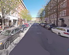
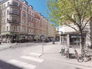
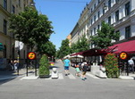
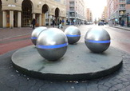
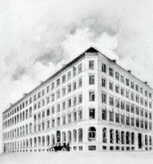
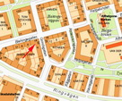
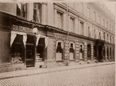
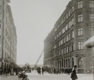
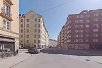
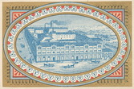

Södermalm i tid och rum
SwedenborgsgatanSwedenborgsgatan skulle ursprungligen bli en stor trafikled och i enlighet med Lindhagenplanen dras vidare söder om järnvägsområdet, över Ringvägen och ner till Årstaviken ungefär i höjd med dagens Eriksdalsbadet. Namnrevisionen genomfördes och man fick två gator med samma namn, avskurna genom Södra stations bangård. År 1949 ändrades det södra gatuavsnittet till Grindsgatan. Någon förlängning ner till Årstaviken genomfördes aldrig.
Södra stationens östra ingång ligger vid Swedenborgsgatan. Framför entrén och mitt i gatan märks skulpturen Pollare och klot i rostfritt stål, uppsatt 2002 och skapad av Mats Olofgörs. Sedan 2015 är norra delen av gatan mellan Fatbursgatan och Mariatorget en av Stockholms sommargågator.
|
 Swedenborgsgatan norrut från Wollmar Yxkullsgatan mot Mariatorget |
 Korsningen Swedenborgs- gatan / Wollmar Yxkulls- gatan (som går till höger) |
 Sommargågata |
 Utanför Södra station söderut |
Södra stations östra ingång. Swedenborgsgatan söderut |
{kind=link}
{kind=link}
{kind=link}
{kind=link}
{kind=link}
|
Guldsmedsaktiebolaget, eller GAB, är en svensk tillverkare av matbestick i silver och nysilver i Eskilstuna. Företaget grundades i Stockholm 1867, och hade länge en bred produktion av föremål i silver och nysilver. Smycketillverkningen bedrevs under perioden 1930-78 av dotterbolaget Guldvaru AB G. Dahlgren & Co.. År 1964 förvärvades Gense och man ägde 1982-86 Nilsjohan. Under denna tid tillverkade man även rostfria bestick. Åren 1961-1978 innehades även butikskedjan Hallbergs. Konstnärlig ledare 1907-1942 var Jacob Ängman, som liksom sin efterträdare Sven Arne Gillgren, gjorde betydande intsatser för att främja konstindustriell formgivning. Under 1980-talet ledde ägar- och strukturförändringar till att den av GAB leda koncernen bröts upp och verksamheten återgick till den ursprungliga som en del i GENSE-koncernen. |
 Guldsmedsaktiebolaget 1924. Hörnet Swedenborgsgatan 50 (numera Grindsgatan) och Blekingegatan 16. Söderut |
{kind=link}
|
 Hörnet där Guldsmeds AB låg |
 |
 Eldsvåda 1929, Swedenborgsgatan 50 |
 Grindsgatan söderut 2020. Hörnet med Blekingegatan 16 till höger |
 Nürnbergbryggeriets fasad mot Swedenborgsgatan i hörnet av Högbergsgatan |
{kind=link}
{kind=link}
{kind=link}
{kind=link}
{kind=link}